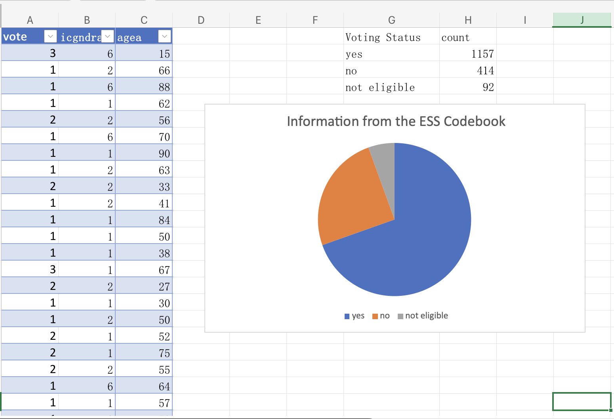

Week 5 · Data Visualisation in Excel
Making my first pie chart
This week, I used an ESS dataset provided by our teacher to practise making a chart in Excel. I focused on the voting status variable and put the responses into three groups: yes, no and not eligible.
My summary table showed 1,157 responses for yes, 414 for no and 92 for not eligible. I used these counts to make a pie chart so I could see how much of the total each group made up. The blue section was clearly the largest, which was much easier to see in the chart than in the original column of numbers.

My reflection
At first, the spreadsheet was just a long list of numbers to me. Once I grouped the responses and made the pie chart, I could see the difference between the three groups straight away. I liked how a few simple steps could make the data much easier to read. But I also needed to understand what the codes stood for before choosing labels for the chart.
The workshop asked us to think about the audience, and that made me look again at my title. “Information from the ESS Codebook” doesn't really tell someone what the slices show. I'd change it to “Voting Status in the Class Dataset” and add the counts or percentages to each slice. I also think it's useful to keep “not eligible” as its own category. Someone who couldn't vote had a different experience from someone who could vote but didn't. Combining them would make the chart simpler, but we'd lose that difference.